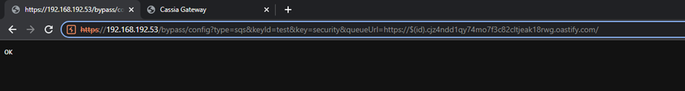
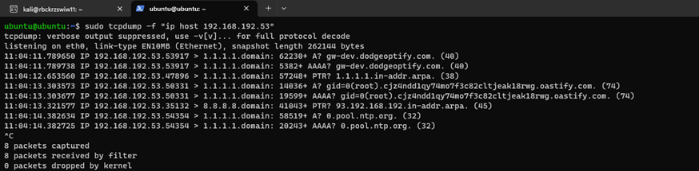

CVE MITRE: CVE-2023-31446
Repository contains description for CVE-2023-31446 discovered by Dodge Industrial Team for Dodge OPTIFY platform.
CVE ID: CVE-2023-31446
Vendor: Cassia Networks
Product: Cassia Gateway Firmware
Version: <2.1.1.230309*
Vulnerability: Remote Code Execution/Remote Code Injection
Affected: gateways
Description: queueUrl parameter in /bypass/config is not sanitized.
This leads to injecting bash code and executing it with root privileges on device startup.
Status:
Confirmed by vendor, Fixed
Version Patched: 2.1.1.230720*
Cassia has implemented in the past function that allows Gateways to push bluetooth scan data to the SQS
Amazon Services.
The settings for mentioned functionality could be set by API endpoint:
http://
/bypass/config?type=sqs&keyId=<"keyId">&key=<"keysecret">&queueUrl=<"queueServiceUrl">
Based on the investigation the SQS feature starts the service on the boot time of the device.
Service
loads configuration file, where mentioned endpoint overwrite the settings.
Service after loading
specified URL runs nslookup from root bash perspective what allows to run any command embeded into URL
parameter.
The access to the endpoint is not authenticated by default. More of that the feature was
not described in the official Cassia documentation.
Attacker can embed bash command ${id} into queueUrl parameter:

After rebooting device, gateway will run the command with root privileges (look A,AAA query):

Gateway -> Default Gateway (Linux) -> Internet